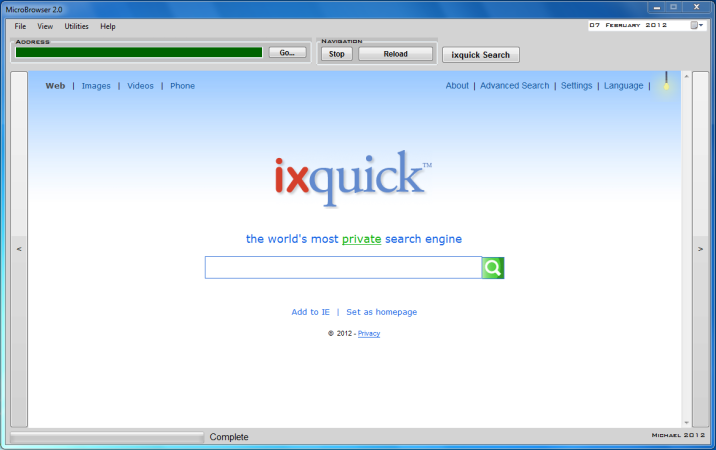

A Visual Basic application I put together back in late-2010, during my first year as an undegraduate, this demonstrates the use of browser controls in a simple Windows Forms application.

Created in Visual Studio 2008 as a small web browser program, it should run in any Microsoft Windows system from any storage device, like a USB drive or MP3 player, without any installation required. I’ve so far tested it in Windows 7 and XP with few problems. I’ve also released MicroBrowser as an open source project, so anyone can download it free, modify the code, or use it in their own projects.
Form and Form Elements
Although it appears we’re starting off with a blank form in the editor when we begin a Visual Basic project, it’s important to note there are already several lines in the code editor referring to a function that displays the form. Much of the code is stored in other project files, such as frmName.Designer.vb, and won’t appear in the code editor. Other things are called from the .NET Framework at runtime.
While it’s not really essential to know this, it’s useful when working with larger projects where using the wrong function, such as a text box instead of a text label, would crash the program.
A web browser will need, at a minimum, a browser element to render web pages, a text box for the user to enter a web address, and a couple of navigation buttons.
Naming and Coding Conventions
Much of the initial work involves adding elements to a form, moving them about and changing their properties, but a lot of code is being added along the way. Therefore, properly naming each element and adding comments is good practice, and makes life much easier later on. It’s especially important if more than one person’s working on the same project. Also, not everyone works with a visual form editor.
Generally accepted naming conventions are:
- Form: frmFormName
- Buttons: cmdButtonName
- Text Boxes: txtTextBoxName
- Browser Window: brwBrowserWindow
- Labels: lblLabelName
- Progress Bar: prgProgressBarMain
Browser Element, Address Bar and Navigation
Programs created in Visual Basic are essentially event-driven, in the sense that one event in the form triggers another event. The central component in the MicroBrowser form is the browser element (brwBrowser), which fetches and renders HTML pages, and reacts to most other elements on the form. The IXquick button is probably the most straightforward example of this, containing the following code:
‘Load IXquick search engine page
Private Sub cmdGoGoogle_Click(ByVal sender As System.Object, ByVal e As System.EventArgs)
Handles cmdIxquick.Click
brwBrowser.Navigate(“https://www.ixquick.com”)
End Sub
This tells element brwBrowser to navigate to whatever web address has been defined, in this case https://www.iquick.com, and render it whenever the user clicks on the IXquick button.
But the user would want to navigate to other web sites, so we need to add a text box (txtWebAddress) to the form, and a command button to tells the browser to navigate to whatever address the user entered into txtWebAddress. The code that does this is placed in the Go button (cmdGo):
‘Go button
Private Sub cmdGo_Click(ByVal sender As System.Object, ByVal e As System.EventArgs)
Handles cmdGo.Click
brwBrowser.Navigate(txtWebAddress.Text)
End Sub
Next the browser should have several navigation buttons, which contain the following within their code:
brwBrowser.GoBack()
brwBrowser.GoForward()
brwBrowser.Stop()
brwBrowser.Refresh()
Progress Bar and Status Messages
While this isn’t essential to a functioning web browser, most have something that indicates whether a page is loading or loaded, and this is where many people have problems when creating one in Visual Studio, since it’s assumed the relevant code goes straight into the browser element. Actually a new event handler is needed in this case, and can be created by adding the following just below the browser code (not within it):
‘Progress bar event handler code
Private Sub brwBrowser_ProgressChanged(ByVal sender As System.Object, ByVal e As System.Windows.Forms.WebBrowserProgressChangedEventArgs)
Handles brwBrowser.ProgressChanged
ProgressBar.Maximum = e.MaximumProgress
ProgressBar.Value = e.CurrentProgress
End Sub
Adding a status message is a little easier, as it’s just a matter of adding a label element (lblCompleted), preferably near the progress bar, and inserting the following line within the browser element:
lblCompleted.Text = “Complete”
This will change the text within lblCompleted to ‘Complete’ when a page has been loaded into the browser element.
Making the Multiform Application
It helps to add a couple of other forms to the project. In addition to the main form (frmMicroBrowser), MicroBrowser currently has a help dialogue (frmAbout) and another one (frmUtilities) for other features to be added in future. The following code can be used for opening, hiding and closing forms:
frmForm.Show()
Me.Close()
Me.Hide()
Finishing Touches
I’ve also modified the project settings, and the compiled executable (MicroBrowser.exe) will be found in the /bin/Release directory whenever the project is built.